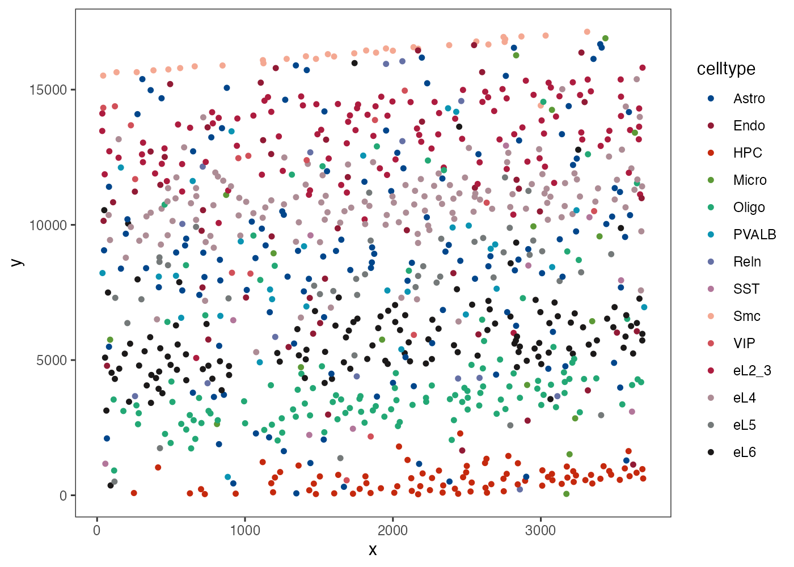
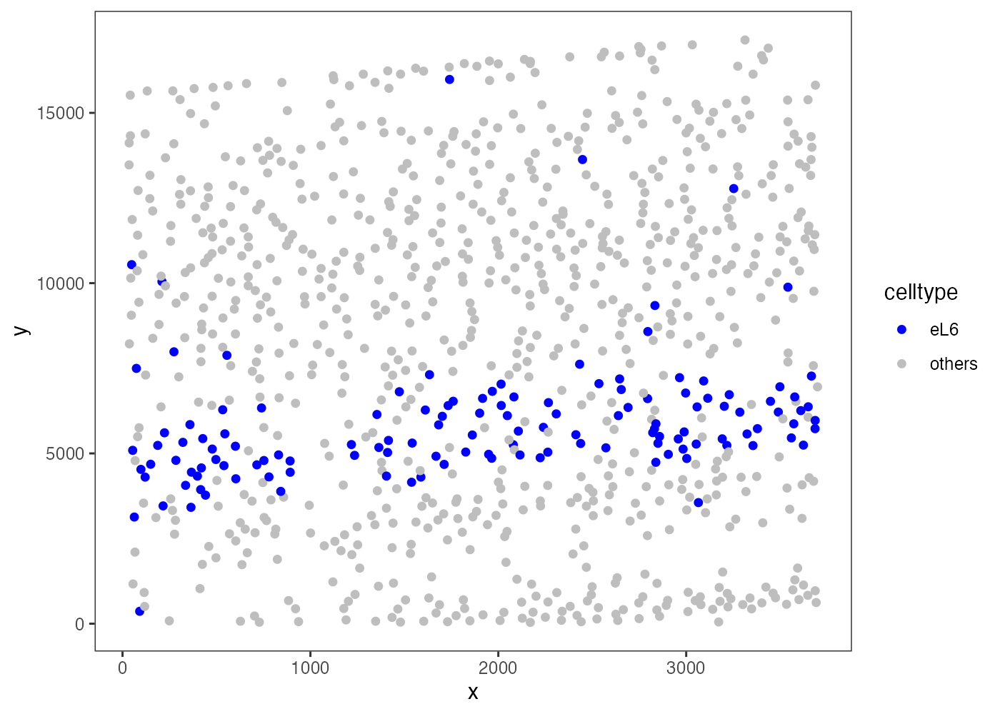
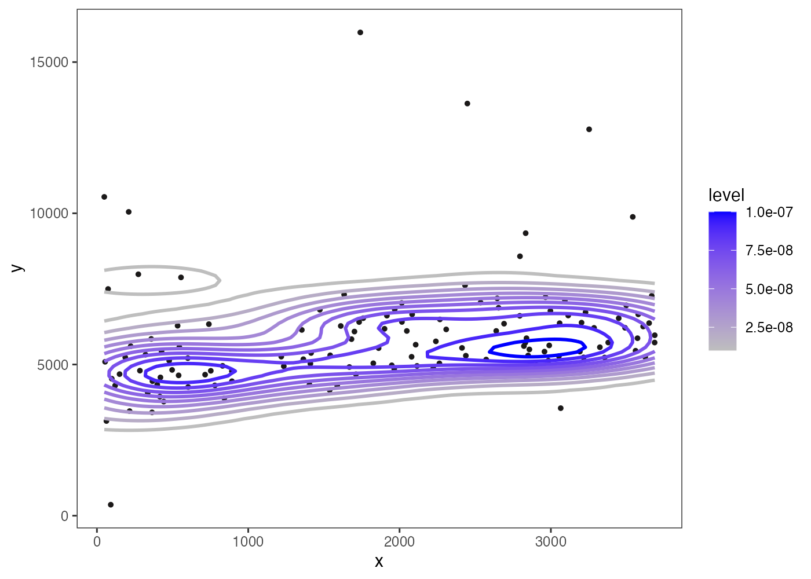
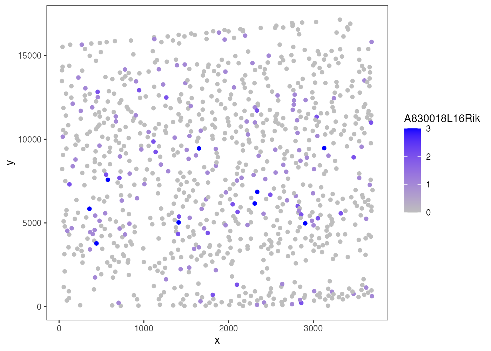
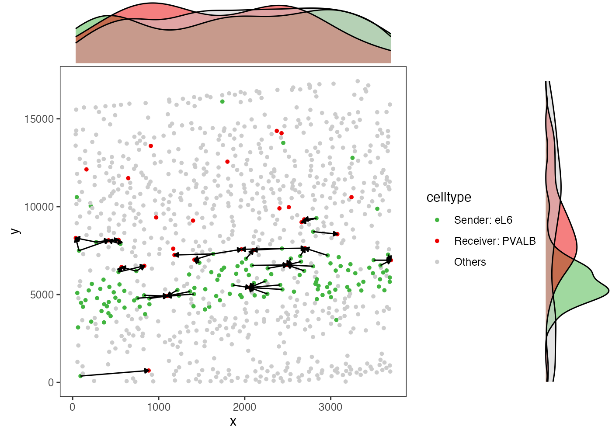
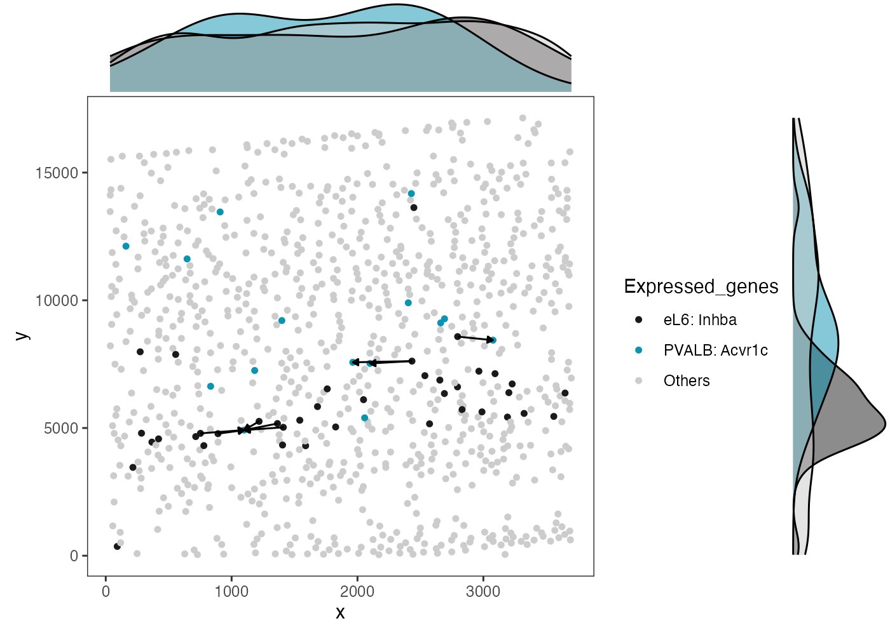
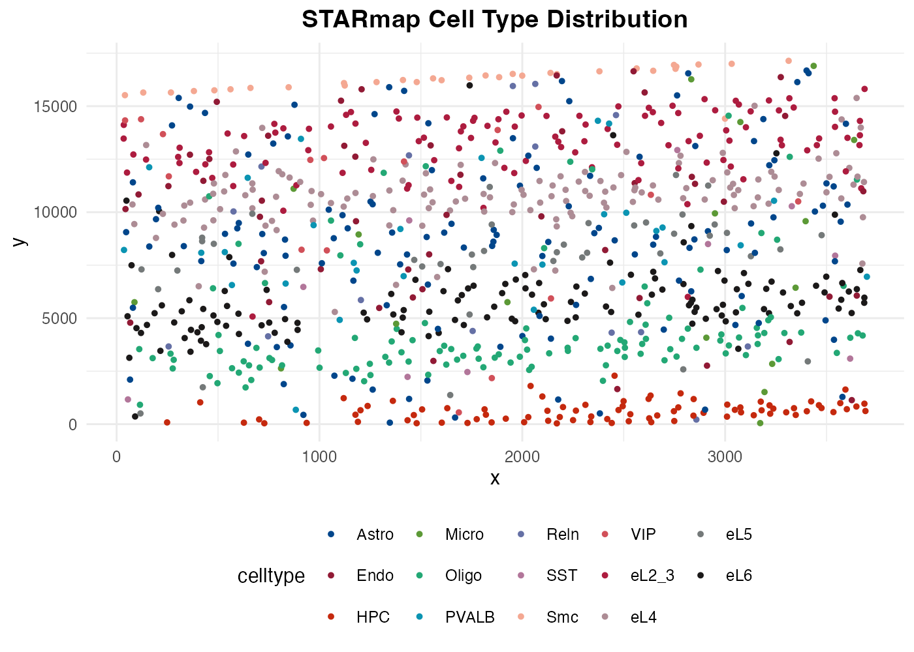

SpaTalk Visualization Guide
Zaoqu Liu
Maintainerliuzaoqu@163.com
2026-01-23
Source:vignettes/visualization.Rmd
visualization.RmdIntroduction
SpaTalk provides a comprehensive suite of visualization functions for exploring spatial transcriptomics data and cell-cell communication results. This vignette demonstrates the key plotting functions with real examples.
Setup
library(SpaTalk)
library(ggplot2)
# Load demo data
load(system.file("extdata", "starmap_data.rda", package = "SpaTalk"))
load(system.file("extdata", "starmap_meta.rda", package = "SpaTalk"))
data(lrpairs)
data(pathways)
# Create SpaTalk object
st_meta <- data.frame(
cell = starmap_meta$cell,
x = starmap_meta$x,
y = starmap_meta$y
)
obj <- createSpaTalk(
st_data = starmap_data,
st_meta = st_meta,
species = "Mouse",
if_st_is_sc = TRUE,
spot_max_cell = 1,
celltype = starmap_meta$celltype
)
obj <- find_lr_path(obj, lrpairs, pathways, if_doParallel = FALSE)
#> Checking input data
#> Begin to filter lrpairs and pathways
#> ***Done***
#>
# Show available cell types
cat("Available cell types:", paste(unique(starmap_meta$celltype), collapse = ", "), "\n")
#> Available cell types: eL2_3, eL6, Astro, PVALB, Endo, VIP, SST, Smc, eL4, Micro, Oligo, eL5, Reln, HPCSpatial Cell Type Visualization
plot_st_celltype_all
Display all cell types in a single spatial plot. This is one of the most commonly used visualizations.
plot_st_celltype_all(
object = obj,
size = 1.2
)
All cell types in spatial context
plot_st_celltype
Visualize specific cell type distributions in spatial coordinates.
plot_st_celltype(
object = obj,
celltype = "eL6",
size = 1.5
)
Spatial distribution of eL6 cells
plot_st_celltype_density
Kernel density estimation of cell type spatial distributions.
plot_st_celltype_density(
object = obj,
celltype = "eL6",
type = "contour"
)
Cell type density map for eL6
Gene Expression Visualization
plot_st_gene
Visualize gene expression patterns in spatial coordinates.
# Get available genes
genes <- rownames(obj@data$rawdata)
cat("Total genes:", length(genes), "\n")
#> Total genes: 996
# Plot first available gene
plot_st_gene(
object = obj,
gene = genes[1],
size = 1.5
)
Spatial gene expression
Advanced Visualizations (After CCI Analysis)
The following visualizations require running dec_cci()
or dec_cci_all() first:
# Run CCI analysis for demonstration
obj <- dec_cci(
object = obj,
celltype_sender = "eL6",
celltype_receiver = "PVALB",
if_doParallel = FALSE
)
#> Begin to find LR pairs
#>
# Check results
if(nrow(obj@lrpair) > 0) {
cat("Found", nrow(obj@lrpair), "significant LR pairs\n")
print(head(obj@lrpair[, c("ligand", "receptor", "lr_co_ratio", "score")]))
}
#> Found 1 significant LR pairs
#> ligand receptor lr_co_ratio score
#> 5 Inhba Acvr1c 0.1666667 0.8541642plot_ccdist
Distribution of distances between interacting cell types.
plot_ccdist(
object = obj,
celltype_sender = "eL6",
celltype_receiver = "PVALB"
)
Cell-cell distance distribution between eL6 and PVALB
plot_lrpair
Spatial visualization of specific ligand-receptor pair interactions (if significant pairs found).
if(nrow(obj@lrpair) > 0) {
lr <- obj@lrpair[1, ]
plot_lrpair(
object = obj,
ligand = lr$ligand,
receptor = lr$receptor,
celltype_sender = "eL6",
celltype_receiver = "PVALB",
size = 1.2
)
} else {
cat("No significant LR pairs found for visualization\n")
}
Spatial LR pair visualization
Customization Tips
Custom Themes
SpaTalk uses ggplot2 for all visualizations. You can easily customize:
p <- plot_st_celltype_all(obj, size = 1)
p +
theme_minimal() +
theme(
legend.position = "bottom",
plot.title = element_text(hjust = 0.5, size = 14, face = "bold")
) +
labs(title = "STARmap Cell Type Distribution")
Customized plot with different theme
Summary of Visualization Functions
| Function | Description | Input Required |
|---|---|---|
plot_st_celltype |
Single cell type spatial | SpaTalk object |
plot_st_celltype_all |
All cell types spatial | SpaTalk object |
plot_st_celltype_percent |
Pie chart per spot | Deconvolved object |
plot_st_celltype_density |
Density heatmap | SpaTalk object |
plot_st_gene |
Gene expression spatial | SpaTalk object |
plot_st_pie |
Pie chart composition | Deconvolved object |
plot_cci_lrpairs |
CCI chord diagram | After dec_cci |
plot_lrpair |
LR pair spatial | After dec_cci |
plot_lrpair_vln |
LR violin plot | After dec_cci |
plot_lr_path |
LR-pathway network | After dec_cci |
plot_path2gene |
Pathway heatmap | After dec_cci |
plot_st_cor_heatmap |
Correlation heatmap | SpaTalk object |
plot_ccdist |
Distance distribution | SpaTalk object |
Session Info
sessionInfo()
#> R version 4.4.0 (2024-04-24)
#> Platform: aarch64-apple-darwin20
#> Running under: macOS 15.6.1
#>
#> Matrix products: default
#> BLAS: /Library/Frameworks/R.framework/Versions/4.4-arm64/Resources/lib/libRblas.0.dylib
#> LAPACK: /Library/Frameworks/R.framework/Versions/4.4-arm64/Resources/lib/libRlapack.dylib; LAPACK version 3.12.0
#>
#> locale:
#> [1] C
#>
#> time zone: Asia/Shanghai
#> tzcode source: internal
#>
#> attached base packages:
#> [1] parallel stats graphics grDevices utils datasets methods
#> [8] base
#>
#> other attached packages:
#> [1] SpaTalk_2.0.0 doParallel_1.0.17 iterators_1.0.14 foreach_1.5.2
#> [5] ggalluvial_0.12.5 ggplot2_4.0.1
#>
#> loaded via a namespace (and not attached):
#> [1] RColorBrewer_1.1-3 jsonlite_2.0.0 magrittr_2.0.4
#> [4] spatstat.utils_3.2-1 farver_2.1.2 rmarkdown_2.30
#> [7] fs_1.6.6 ragg_1.5.0 vctrs_0.7.0
#> [10] ROCR_1.0-11 spatstat.explore_3.6-0 rstatix_0.7.3
#> [13] htmltools_0.5.9 progress_1.2.3 broom_1.0.11
#> [16] Formula_1.2-5 sass_0.4.10 sctransform_0.4.3
#> [19] parallelly_1.46.1 KernSmooth_2.23-26 bslib_0.9.0
#> [22] htmlwidgets_1.6.4 desc_1.4.3 ica_1.0-3
#> [25] plyr_1.8.9 plotly_4.11.0 zoo_1.8-15
#> [28] cachem_1.1.0 igraph_2.2.1 mime_0.13
#> [31] lifecycle_1.0.5 pkgconfig_2.0.3 Matrix_1.7-4
#> [34] R6_2.6.1 fastmap_1.2.0 fitdistrplus_1.2-4
#> [37] future_1.69.0 shiny_1.12.1 digest_0.6.39
#> [40] patchwork_1.3.2 Seurat_4.4.0 tensor_1.5.1
#> [43] irlba_2.3.5.1 textshaping_1.0.4 ggpubr_0.6.2
#> [46] labeling_0.4.3 progressr_0.18.0 spatstat.sparse_3.1-0
#> [49] httr_1.4.7 polyclip_1.10-7 abind_1.4-8
#> [52] compiler_4.4.0 withr_3.0.2 backports_1.5.0
#> [55] S7_0.2.1 carData_3.0-5 ggforce_0.5.0
#> [58] ggsignif_0.6.4 MASS_7.3-65 rappdirs_0.3.4
#> [61] ggsci_4.2.0 tools_4.4.0 lmtest_0.9-40
#> [64] otel_0.2.0 scatterpie_0.2.6 httpuv_1.6.16
#> [67] future.apply_1.20.1 goftest_1.2-3 glue_1.8.0
#> [70] nlme_3.1-168 promises_1.5.0 grid_4.4.0
#> [73] Rtsne_0.17 cluster_2.1.8.1 reshape2_1.4.5
#> [76] generics_0.1.4 isoband_0.3.0 gtable_0.3.6
#> [79] spatstat.data_3.1-9 tzdb_0.5.0 tidyr_1.3.2
#> [82] data.table_1.18.0 hms_1.1.4 car_3.1-3
#> [85] sp_2.2-0 spatstat.geom_3.6-1 RcppAnnoy_0.0.23
#> [88] ggrepel_0.9.6 RANN_2.6.2 pillar_1.11.1
#> [91] stringr_1.6.0 yulab.utils_0.2.3 ggExtra_0.11.0
#> [94] later_1.4.5 splines_4.4.0 tweenr_2.0.3
#> [97] dplyr_1.1.4 lattice_0.22-7 survival_3.8-3
#> [100] deldir_2.0-4 tidyselect_1.2.1 miniUI_0.1.2
#> [103] pbapply_1.7-4 knitr_1.51 gridExtra_2.3
#> [106] scattermore_1.2 xfun_0.56 matrixStats_1.5.0
#> [109] pheatmap_1.0.13 stringi_1.8.7 ggfun_0.2.0
#> [112] lazyeval_0.2.2 yaml_2.3.12 evaluate_1.0.5
#> [115] codetools_0.2-20 tibble_3.3.1 cli_3.6.5
#> [118] uwot_0.2.4 xtable_1.8-4 reticulate_1.44.1
#> [121] systemfonts_1.3.1 jquerylib_0.1.4 dichromat_2.0-0.1
#> [124] Rcpp_1.1.1 globals_0.18.0 spatstat.random_3.4-3
#> [127] png_0.1-8 spatstat.univar_3.1-6 readr_2.1.6
#> [130] pkgdown_2.1.3 NNLM_0.4.4 prettyunits_1.2.0
#> [133] listenv_0.10.0 viridisLite_0.4.2 scales_1.4.0
#> [136] ggridges_0.5.7 SeuratObject_4.1.4 leiden_0.4.3.1
#> [139] purrr_1.2.1 crayon_1.5.3 rlang_1.1.7
#> [142] cowplot_1.2.0